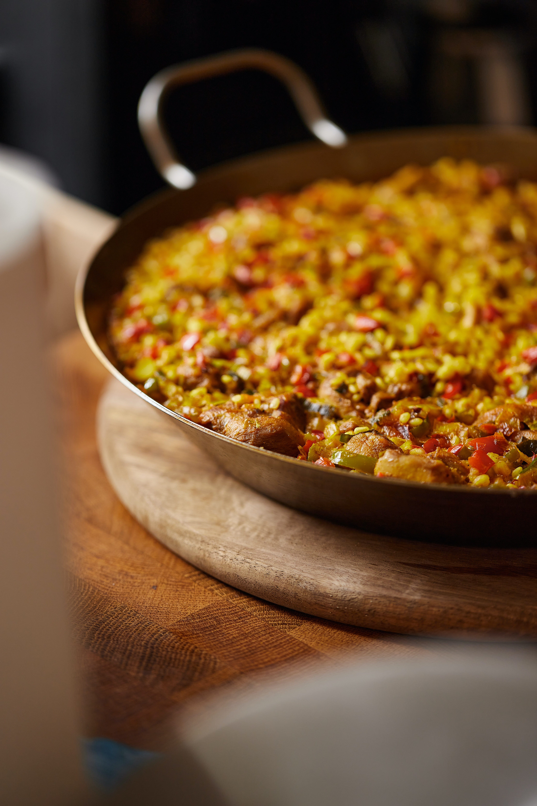

Simple Vegan Paella

What's a paella?=
A paella is a traditional dish that originated from the East coast of Spain, more specifically the Valencian region. It consists of round-grain rice, bajoqueta and
garrofó (varieties of green bean and butter bean respectively) and rabbit, chicken or duck. In this version we will be teaching you how to make a compassioned paella.
WHat will you need?
- Round-grain rice
- Bajoquetas or green beans
- Garrofó or giant butter beans (we will use pre-cooked ones)
- Onions
- Garlic
- Extra-virgin Olive Oil
- Your preferred chicken substitute (we will use Oumph!) Optional
- Spices
- Rosemary
- Saffron
- Salt
- Smoked Paprika
How to do it?
- Add oil to a big pan and add your chicken substitute if you chose to include it in your recipe.
- Chop onions in little squares and chop garlic even smaller. When your substitute is sealed, add onion and garlic to the pan.
- Add garrofó and bajoqueta once onions are softer. You can add your spice, except saffron, and mix them well. Make sure they don't get burned.
- When beans are somewhat cooked, cover everything with water. In a separate recipient mix your saffron with warm water and when it releases its colour
add to the pan.
- When the waters comes to a boil, arrange the ingredients however you like as once you add the rice you cannot not mix it. Then, add
the rice in a way it everywhere in the pan and make sure it's under the water. From now on, don't stir the mix. Leave it to cook on medium to low fire.
- When the water is consumed, turn off the fire. Cover the pan with foil and let it sit for 10 minutes.
Voilà! You now have made your very own vegan paella! Enjoy it with fresh lemon and vegan alioli.
¡Que aproveche!